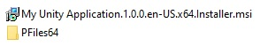

Maximum Installer Size
MSI usually packs all source files into a single, self-contained .msi file by using .cab archives. However, the .cab archive format has some size limitations:
No one file in a CAB can exceed 2GB
Maximum size of all files in one folder (compressed) 2GB
Maximum size of a CAB file (compressed) 2GB
Maximum number of files in a single CAB 64K:
These are limitations of the .msi format itself and can not be worked around.
(Source)
However, especially with media-rich Unity applications, it’s pretty easy to hit the 2GB limit. If that’s the case for your application, you are faced with the following options:
Create an Uncompressed MSI
By default, if your installer contains files with a total size of more than 2 GB, an uncompressed msi installer will be created. This will not be a single-file, self-contained installer. Instead, it is an installer package with all the source files in a separate folder next to it. Here is an example of what that looks like:
Users will have to download both the .msi file as well as the PFiles64/PFiles folder in order to install the application. It is recommended to distribute these files in a .zip archive (or other archive formats).
Download Content from the Web
If your application’s content exceeds 2GB, looking at ways to distribute most of the content over the web is the recommended approach. Keeping the base application small and loading assets after installation, can be achieved using Unity’s Addressable Asset System for example.
Keep in mind that for non-business applications, uploading to a store is most of the time the best way to go (as outlined here).
Additional Details
Note
From the list at the top of this page, you might have noticed that even single files larger than 2GB are not natively supported by MSI. In complex projects, certain files of your Unity build (packed assets like lightmaps, texture atlases, etc.) might easily exceed 2GB. Windows Installer for Unity works around this limitation by automatically splitting such large files at build time and creating a custom action that merges these split files back together at installation time.